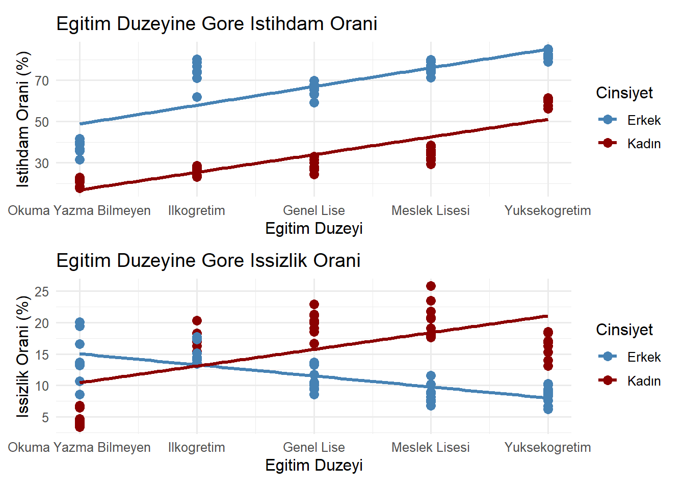

Türkiye’de Kadınların Sosyoekonomik Durumu Üzerine Veri Analitiği Temelli Bir İnceleme
✨ Veri Hazırlık Aşaması
Aşağıdaki kod bloğu, Excel formatındaki 6 farklı veri setini okuyarak birleştirir ve bunları kadın_projesi_verisi.RData adlı dosyaya kaydeder.
📂 Kodu görmek için tıklayın
Pınar MÜRTEZAOĞLU / Gamze KAZEL BOZKURT
1. Project Overview and Scope
Kadınların sosyoekonomik durumu; işgücüne katılım oranı, gelir seviyesi, kamusal temsiliyet, eğitim düzeyi ve bölgesel farklılıklar gibi çok boyutlu faktörlerden etkilenmektedir. Özellikle ataerkil toplumsal yapının baskın olduğu bölgelerde, kadınlar ekonomik ve sosyal yaşama katılımda hem yapısal hem de kültürel engellerle karşılaşmaktadır. Bu durum yalnızca bireysel refahı sınırlamakla kalmamakta, aynı zamanda ülkenin genel kalkınma potansiyelini de azaltmaktadır. Bu proje, kadınların Türkiye’deki sosyoekonomik durumunu, eğitim düzeyi, gelir seviyesi ve toplumsal roller gibi çok boyutlu göstergeler üzerinden veri temelli bir yaklaşımla analiz etmeyi amaçlamaktadır. Projenin temel çerçevesi; kadınların eğitim düzeyi ile gelir arasındaki ilişkinin incelenmesi, işgücüne katılım oranlarının bölgesel farklılıklar bağlamında analiz edilmesi ve elde edilen veriler ışığında kamu politikalarına yönelik önerilerin geliştirilmesini içermektedir.
2. Data
İstatistiklerle Kadın – 2024
2.1 Data Source
Bu çalışmada kullanılan veriler, Türkiye İstatistik Kurumu (TÜİK) veri tabanından elde edilmiştir. Veriler, TÜİK’in çevrimiçi veri portalından .xlsx formatında indirilmiş ve analizde kullanılacak şekilde düzenlenmiştir.
2.2 General Information About Data
Çalışmada; kadınların eğitim düzeyi, işgücüne katılım oranı, bölgesel düzeyde istihdam oranları, ücret farklılıkları, işgücü içindeki konumları gibi değişkenler ele alınmış, aynı değişkenler üzerinden erkeklerle karşılaştırmalı analizler yapılmıştır.
2.3 Reason of Choice
Bu çalışmada kullanılan veriler, kamuya açık ve ücretsiz olarak sunulan TÜİK veri tabanından elde edilmiştir. TÜİK, uluslararası standartlara uygunluğu ve ulusal düzeyde temsili veri sağlayabilme kapasitesi nedeniyle tercih edilmiştir.
1.Veri
Bu çalışmada kullanılan İstatistiklerle Kadın – 2024 verileri, kamuya açık ve ücretsiz olarak sunulan Türkiye İstatistik Kurumu (TÜİK) veri tabanından elde edilmiştir. TÜİK, uluslararası standartlara uygunluğu ve ulusal düzeyde temsili veri sağlayabilme kapasitesi nedeniyle tercih edilmiştir.
İstatistiklerle Kadın – 2024 veri setinden; cinsiyet ve eğitim durumuna göre işgücü durumu, cinsiyet ve İBBS 2. düzeye göre temel işgücü göstergeleri, cinsiyete göre 25-49 yaş grubunda olup hanehalkında 3 yaşın altında çocuğu olan ve çocuğu olmayan kişilerin istihdam oranı, eğitim durumuna göre yıllık ortalama brüt kazanç, cinsiyete göre üst ve orta düzey yönetici pozisyonlarındaki bireylerin oranı ve meslek grubuna göre yıllık ortalama brüt kazanç verileri TÜİK’in çevrimiçi veri portalından .xlsx formatında indirilmiş ve analizde kullanılacak şekilde ayrı ayrı düzenlenmiştir.
Verinin tamamında bilinmeyen (NA) değer bulunmamaktadır. Yıl, cinsiyet, işsizlik oranı, istihdam oranı, eğitim düzeyi, kazanç verileri, çocuk sahibi olma durumu, meslek grupları ve bölgesel farklılıklar sütun olarak eklenmiş, gözlem değerleri satırlara yazılmıştır.
Cinsiyet verisi kadın ve erkek olarak iki kategoride alınmıştır. Eğitim düzeyine dair veriler sıralı sayı haline getirilmiştir. Veri tablolarında eğitim düzeyleri; okuyazar değil, lise altı, lise, mesleki veya teknik lisesi, yükseköğretim şeklinde beş kategoriye ayrılmıştır. Analizi kolaylaştırmak için eğitim düzeyleri sırasıyla 1,2,3,4 ve 5 olarak tanımlanmıştır.
İstihdam oranı, işsizlik oranı gibi verilerde yüzdelik olarak verilen değerlerin yüzde kısımları silinmiş, ondalık sayı(numeric) haline getirilmiştir.
Bu çalışmada, kadınların eğitim durumu, bölgesel düzeydeki istihdam oranları, ücret düzeyleri ve işgücü içerisindeki konumları analiz edilmiş; bu göstergeler doğrultusunda cinsiyete dayalı karşılaştırmalı değerlendirmeler yapılmıştır.
#2. İşgücü Piyasasında Genel Görünüm
2.1. Bölgelere Göre İstihdam Oranı
Bölge ve cinsiyete göre istihdam oranlarına ait grafik Şekil-2.1’de gösterilmektedir. Her bölgede erkek istihdam oranının kadın istihdam oranından fazla olduğu görülmektedir. 2023 yılında 15 ve daha yukarı yaştaki kadın nüfusun istihdam oranı %31,3, erkek nüfusun istihdam oranı ise %65,7’dir. İBBS 2.Düzeye göre en yüksek kadın istihdam oranı, %38,9 ile TR61 (Antalya, Isparta, Burdur) bölgesinde, en düşük kadın istihdam oranı ise %19,8 ile TRC3 (Mardin, Batman, Şırnak, Siirt) bölgesinde gerçekleşmiştir.
Kadın istihdamının en az olduğu beş bölgeye bakıldığında neredeyse tamamının Doğu ve Güneydoğu bölgelerindeki illerden oluştuğu dikkat çekmektedir.
Hemen her bölgede erkeklerin istihdam oranının kadınlara kıyasla anlamlı şekilde daha yüksek olduğu görülmektedir. Bu durum, toplumsal cinsiyet temelli istihdam eşitsizliğinin bölgesel düzeyde yaygın bir sorun olduğunu ortaya koymaktadır.
# Gerekli paketler# install.packages("tidyr")# install.packages("readr")# install.packages("dplyr")# install.packages("readxl")# install.packages("ggplot2")library(readxl)library(ggplot2)library(tidyr)library(dplyr)
Attaching package: 'dplyr'
The following objects are masked from 'package:stats':
filter, lag
The following objects are masked from 'package:base':
intersect, setdiff, setequal, union
# Geçici bir ortamda sadece bolge_duzeyi verisini yükletemp_env <-new.env()load("kadın_projesi_verisi.RData", envir = temp_env)# İlgili veri setini alveri <- temp_env$bolge_duzeyi# Kadın istihdam oranına göre sıralı bölge listesi oluştursirali_bolgeler <- veri %>%filter(cinsiyet =="Kadın") %>%arrange(desc(istihdam_orani)) %>%pull(bolge)# Bolgeyi sıralı faktöre çevir (grafikte sıralı görünsün)veri$bolge <-factor(veri$bolge, levels = sirali_bolgeler)# Türkiye ortalamalarıortalama_kadin <-31.3ortalama_erkek <-65.7# Grafikggplot(veri, aes(x = istihdam_orani, y = bolge, fill = cinsiyet)) +geom_bar(stat ="identity", position ="dodge") +geom_vline(xintercept = ortalama_kadin, color ="green", linetype ="dashed", size =1) +geom_vline(xintercept = ortalama_erkek, color ="steelblue", linetype ="dashed", size =1) +labs(title ="Bolgelere ve Cinsiyete Gore Istihdam Orani",x ="Istihdam Orani (%)", y ="Bolge", fill ="Cinsiyet") +theme_minimal() +theme(axis.text.y =element_text(size =7))
Warning: Using `size` aesthetic for lines was deprecated in ggplot2 3.4.0.
ℹ Please use `linewidth` instead.
#2.2. Eğitim Durumuna Göre Yıllık Kazanç Durumu
Eğitim düzeyine göre kadın ve erkek için yıllık kazanç miktarları Şekil-2.2’deki grafikte gösterilmektedir. 2023 yılı verilerine göre kazanç düzeylerinin hem erkeklerde hem de kadınlarda eğitim durumu ile birlikte yükseldiği görülmektedir. Ancak eğitim seviyesi arttıkça cinsiyetler arası kazanç farkı belirginleşmektedir. Bu durum, özellikle yükseköğretim mezunları arasında ciddi bir gelir eşitsizliğine işaret etmektedir. Eğitim durumuna göre en yüksek yıllık ortalama brüt kazancı yükseköğretim eğitim düzeyine sahip olanlar elde etmiş olup, bu eğitim düzeyinde yıllık ortalama brüt kazanç erkeklerde 431 bin 364 TL, kadınlarda ise 354 bin 149 TL olmuştur. Tüm seviyelerde erkek ve kadın aynı eğitim düzeyinde olmasına rağmen erkeklerin yıllık ortalama brüt kazancının kadınlardan fazla olduğu görülmektedir.
library(readxl)library(ggplot2)library(tidyr)library(dplyr)library(readr)# Geçici bir ortam oluştur ve .RData dosyasını yükletemp_env <-new.env()load("kadın_projesi_verisi.RData", envir = temp_env)# Sadece yillik_kazanc verisini alveri <- temp_env$yillik_kazanc# Sütun adlarını ASCII karakterlerine dönüştürnames(veri) <-iconv(names(veri), from ="", to ="ASCII//TRANSLIT")# Grafik oluşturggplot(veri, aes(x =reorder(egitim_duzeyi, yillik_ort_brut_kazanc), y = yillik_ort_brut_kazanc, fill = cinsiyet)) +geom_bar(stat ="identity", position ="dodge") +geom_text(aes(label =paste0(format(yillik_ort_brut_kazanc, big.mark =".", decimal.mark =","), ",00")), position =position_dodge(width =0.9), vjust =-0.3, size =3) +scale_y_continuous(labels = scales::comma_format(big.mark =".", decimal.mark =",")) +labs(title ="Egitim Duzeyine Gore Yillik Ortalama Brut Kazanc",x ="Egitim Duzeyi", y ="Yillik Kazanc (TL)", fill ="Cinsiyet") +theme_minimal()
#2.3. Meslek Gruplarına Göre Kazanç Durumu
Meslek gruplarına göre kadın ve erkek için yıllık ortalama kazanç verileri Şekil-2.3’te gösterilmektedir. 2023 yılı verilerine göre, kadınlarda en yüksek yıllık ortalama brüt kazancı 530.663,00 TL ile yöneticiler meslek grubunda çalışanlar elde etmiştir. Yönetici pozisyonunda çalışan erkek ve kadınlar arasında yıllık ortalama kazançlarında farklılığın düşük olduğu dikkat çekmektedir. En düşük yıllık ortalama brüt kazanç ise 185.860,00 TL ile nitelikli tarım, ormancılık ve su ürünleri çalışanları grubunda gerçekleşmiştir. Yalnızca “Hizmet ve servis elemanları” meslek grubunda çalışan kadınlar aynı meslek grubunda çalışan erkeklere göre daha fazla yıllık ortalama kazanç elde etmiş, diğer tüm meslek gruplarında erkekler kadınlardan daha fazla yıllık ortalama kazanç sağlamıştır.
The following object is masked from 'package:readr':
col_factor
# Geçici bir ortam oluştur ve RData dosyasını yükletemp_env <-new.env()load("kadın_projesi_verisi.RData", envir = temp_env)# İlgili veri setini alveri <- temp_env$meslek_gruplarina_gore_kazanc# Ortalama kazancı cinsiyet ve meslek bazında hesaplaveri <- veri %>%group_by(meslek, cinsiyet) %>%summarize(yillik_ort_kazanc =mean(yillik_ort_kazanc, na.rm =TRUE), .groups ="drop")# Kadınlara göre meslek sıralamasısirali_meslekler <- veri %>%filter(cinsiyet =="Kadın") %>%arrange(yillik_ort_kazanc) %>%pull(meslek)# Sıralı faktör olarak ayarlaveri$meslek <-factor(veri$meslek, levels = sirali_meslekler)# Grafikggplot(veri, aes(x = meslek, y = yillik_ort_kazanc, fill = cinsiyet)) +geom_bar(stat ="identity", position ="dodge") +geom_text(aes(label =format(yillik_ort_kazanc, big.mark =".", decimal.mark =",", nsmall =2)),position =position_dodge(width =0.9), hjust =-0.1, size =2.5) +coord_flip() +scale_fill_manual(values =c("Kadın"="yellow", "Erkek"="lightgreen")) +scale_y_continuous(breaks =c(0, 150000, 250000, 350000, 450000),labels =label_number(big.mark =".", decimal.mark =",", accuracy =1),expand =expansion(mult =c(0, 0.15)) ) +labs(title ="Kadın ve Erkeklerin Mesleklere Göre Yıllık Ortalama Kazançları",x ="Meslek Grubu", y ="Yıllık Ortalama Kazanç (TL)", fill ="Cinsiyet") +theme_minimal() +theme(axis.text.y =element_text(margin =margin(r =10)))
#2.4. Üst ve Orta Düzey Yönetici Pozisyonundaki Görünüm
Yıllara göre kadın ve erkek için üst ve orta düzey yönetici olma oranı Şekil-2.4’teki grafikte gösterilmektedir. Üst ve orta düzey yönetici pozisyonundaki kadın oranı 2012 yılında %14.4 iken 2023 yılında %20.6 olmuştur. Bu artış, kadınların liderlik pozisyonlarında görünürlüğünün zamanla arttığını göstermektedir. Ancak artış hızı yavaş ve sınırlı kalmıştır. Bu oran erkeklerde 2012 yılında %85.6 iken 2023 yılında %79.4 olarak gerçekleşmiştir. Bu düşüş, kadınların yönetime daha fazla dâhil olmaya başladığını gösterse de, erkekler hâlâ yönetici pozisyonlarının büyük çoğunluğunu elinde bulundurmaktadır. 2012-2023 yıllarındaki orta ve üst düzey yönetici oranları incelendiğinde tüm yıllarda kadınların yönetici pozisyonunda erkeklerle kıyaslandığında çok daha az yer bulabildiği görülmektedir.
library(readxl)library(ggplot2)library(tidyr)library(dplyr)library(readr)# Geçici ortam oluştur ve .RData dosyasını yükletemp_env <-new.env()load("kadın_projesi_verisi.RData", envir = temp_env)# Sadece 'yonetici' verisini alveri <- temp_env$yonetici# Sütun adlarını ASCII formatına çevir (Türkçe karakter hatası önlemi)names(veri) <-iconv(names(veri), from ="", to ="ASCII//TRANSLIT")# Veriyi düzenleveri <- veri %>%mutate(cinsiyet =as.character(cinsiyet),orta_ust_yonetici_orani =as.numeric(orta_ust_yonetici_orani) ) %>%filter(cinsiyet %in%c("Kadın", "Erkek")) %>%mutate(cinsiyet =factor(cinsiyet, levels =c("Kadın", "Erkek")))# Grafik oluşturggplot(veri, aes(x =as.factor(yil), y = orta_ust_yonetici_orani, color = cinsiyet, group = cinsiyet)) +geom_line(size =1) +geom_point(size =2) +geom_text(aes(label =sprintf("%.1f", orta_ust_yonetici_orani)),vjust =-0.5,size =3,show.legend =FALSE ) +labs(title ="Yıllara Göre Orta ve Üst Düzey Yönetici Olma Oranı",x ="Yıl",y ="Orta ve Üst Düzey Yönetici Oranı (%)",color ="Cinsiyet") +scale_color_manual(values =c("Kadın"="purple", "Erkek"="orange")) +theme_minimal()
#2.5. Çocuğa Bağlı İstihdam Oranı
Üç yaş altı çocuk sahibi olma durumuna göre kadın ve erkek için yıllara göre istihdam oranları Şekil-2.5’te gösterilmektedir. 2023 yılında hanesinde 3 yaşın altında çocuğu olan 25-49 yaş grubundaki kadınların istihdam oranının %27,1, erkeklerin istihdam oranının ise %90,6 olduğu görülmüştür. 2023 yılında çocuk sahibi olmayan kadınların istihdam oranı %58 iken, erkekler için bu oran %79.3’tür.
2014-2023 yılları için veriler incelendiğinde çocuk sahibi olmayan kadınların istihdam oranının, 3 yaş altı çocuk sahibi olan kadınlara kıyasla tüm yıllar için neredeyse iki katı olduğu görülmektedir. Bu durum erkeklerde ters etki yaratmaktadır. 3 yaş altı çocuk sahibi olan erkeklerin istihdam oranı, çocuk sahibi olmayanlara göre daha fazladır. Bu grafik, bakım yükümlülüklerinin cinsiyetler arasında eşit dağılmadığını açıkça göstermektedir. Erkeklerin çocuk sahibi olduktan sonra istihdam oranları büyük ölçüde korunurken, kadınların istihdam oranı keskin şekilde düşmektedir.
library(readxl)library(ggplot2)library(tidyr)library(dplyr)library(readr)# Geçici bir ortam oluştur ve .RData dosyasını yükletemp_env <-new.env()load("kadın_projesi_verisi.RData", envir = temp_env)# Veriyi çağırveri <- temp_env$cocuga_bagli_istihdam_orani# Uzun formata dönüştür (pivot_longer)veri_long <- veri %>%pivot_longer(cols =c("3yasalti_cocuk_olan_istihdam_orani", "cocuk_olmayan_istihdam_orani"), names_to ="cocuk_durumu", values_to ="istihdam_orani" ) %>%mutate(cocuk_durumu =recode(cocuk_durumu, "3yasalti_cocuk_olan_istihdam_orani"="3 Yaş Altı Çocuk Sahibi","cocuk_olmayan_istihdam_orani"="Çocuk Sahibi Değil" ))# Grafik oluşturggplot(veri_long, aes(x =as.factor(yil), y = istihdam_orani, color = cinsiyet, linetype = cocuk_durumu, group =interaction(cinsiyet, cocuk_durumu))) +geom_line(size =1.2) +geom_point(size =3) +geom_text(aes(label =round(istihdam_orani, 1)), vjust =-0.9, size =3, show.legend =FALSE) +labs(title ="Yıllara Göre 3 Yaş Altı Çocuk Sahibi Olma Durumuna Göre İstihdam Oranı",x ="Yıl",y ="İstihdam Oranı (%)",color ="Cinsiyet",linetype ="Cocuk Durumu") +scale_x_discrete(breaks =unique(veri_long$yil)) +scale_y_continuous(breaks =seq(0, 90, by =10)) +theme_minimal() +scale_color_manual(values =c("royalblue", "hotpink"))
3. Analiz
Çalışmanın temel amacı, Türkiye’de işgücü piyasasında eğitim seviyesine göre cinsiyet farklılıklarını belirlemektir. Bu kapsamda, işgücü verileri kullanılarak iki temel model oluşturulmuştur: İstihdam Oranı Modeli ve İşsizlik Oranı Modeli
3.1. Modelleme Yaklaşımı
Analizde, cinsiyet ve eğitim düzeyi arasındaki etkileşimi gözlemlemek için doğrusal regresyon modelleri kullanılmıştır.
3.1.1. İstihdam Oranı Modeli
İstihdam oranı, işgücünün hangi oranda ekonomik faaliyetlere katılabildiğini göstermesi bakımından önemlidir. İstihdam edilen kişilerin kurumsal olmayan çalışma çağındaki nüfusa oranı, istihdam oranını ifade etmektedir. Bu modelde, istihdam oranı bağımlı değişken olarak alınmış, eğitim düzeyi ve cinsiyet bağımsız değişken olarak modele dahil edilmiştir. Model, eğitim düzeyi ve cinsiyet arasındaki etkileşimi de göz önünde bulunduracak şekilde formüle edilmiştir:
İşsizlik oranı, bir ekonomide işi olmayıp iş arayanların işgücüne oranıdır. İşsizlik oranı ekonominin performansını yansıtması bakımından oldukça önemlidir. Bu modelde işsizlik oranı bağımlı değişken olarak kullanılmış ve benzer şekilde eğitim düzeyi ile cinsiyet arasındaki etkileşim dikkate alınarak analiz edilmiştir:
# Geçici ortam oluştur ve RData dosyasını yükletemp_env <-new.env()load("kadın_projesi_verisi.RData", envir = temp_env)# Veriyi alveri <- temp_env$isgucu_verisi# Eksik verileri grup ortalaması ile doldurveri <- veri %>%group_by(cinsiyet, egitim_duzeyi) %>%mutate(issizlik_orani =ifelse(is.na(issizlik_orani), mean(issizlik_orani, na.rm =TRUE), issizlik_orani),istihdam_orani =ifelse(is.na(istihdam_orani), mean(istihdam_orani, na.rm =TRUE), istihdam_orani) ) %>%ungroup()# Eğitim düzeyine sıralama ekleveri <- veri %>%mutate(egitim_sira =case_when( egitim_duzeyi =="Okuma yazma bilmeyen"~1, egitim_duzeyi =="Ilkogretim"~2, egitim_duzeyi =="Genel lise"~3, egitim_duzeyi =="Lise dengi mesleki okul"~4, egitim_duzeyi =="Yuksekogretim"~5,TRUE~NA_real_ ))# Cinsiyeti faktöre çevirveri$cinsiyet <-factor(veri$cinsiyet)# Regresyon modellerimodel_istihdam <-lm(istihdam_orani ~ egitim_sira * cinsiyet, data = veri)model_issizlik <-lm(issizlik_orani ~ egitim_sira * cinsiyet, data = veri)# Grafik tema ve renk ayarlarımy_colors <-c("Kadın"="darkred", "Erkek"="steelblue")my_theme <-theme_minimal(base_size =12)# Grafik 1: İstihdam Oranıg1 <-ggplot(veri, aes(x = egitim_sira, y = istihdam_orani, color = cinsiyet)) +geom_point(size =3) +geom_smooth(method ="lm", se =FALSE, linewidth =1.2) +scale_color_manual(values = my_colors) +scale_x_continuous(breaks =1:5,labels =c("Okuma Yazma Bilmeyen", "Ilkogretim", "Genel Lise", "Meslek Lisesi", "Yuksekogretim") ) +labs(title ="Egitim Duzeyine Gore Istihdam Orani",x ="Egitim Duzeyi", y ="Istihdam Orani (%)", color ="Cinsiyet") + my_theme# Grafik 2: İşsizlik Oranıg2 <-ggplot(veri, aes(x = egitim_sira, y = issizlik_orani, color = cinsiyet)) +geom_point(size =3) +geom_smooth(method ="lm", se =FALSE, linewidth =1.2) +scale_color_manual(values = my_colors) +scale_x_continuous(breaks =1:5,labels =c("Okuma Yazma Bilmeyen", "Ilkogretim", "Genel Lise", "Meslek Lisesi", "Yuksekogretim") ) +labs(title ="Egitim Duzeyine Gore Issizlik Orani",x ="Egitim Duzeyi", y ="Issizlik Orani (%)", color ="Cinsiyet") + my_theme# İki grafiği birlikte gösterg1 / g2 +plot_layout(ncol =1)
`geom_smooth()` using formula = 'y ~ x'
`geom_smooth()` using formula = 'y ~ x'

4. Bulgular
Eğitim düzeyine göre kadın ve erkek için istihdam oranı ve işsizlik oranı Şekil-3’te yer alan grafiklerle sunulmuştur. Grafiklerde kullanılan eğri çizgiler, doğrusal regresyon eğilimlerini göstermektedir.
İstihdam oranı analizine göre; eğitim düzeyinin istihdam oranı üzerinde kadın ve erkek için anlamlı bir etkisi olduğu sonucu elde edilmektedir. Eğitim düzeyi hem erkeklerin hem de kadınların istihdam oranını artırmak ile birlikte, erkeklerin istihdamı için daha güçlü ve pozitif bir etki yaratmaktadır. Kadınların eğitimden elde ettiği istihdam artışının erkeklere göre ortalama %8.04 daha az olduğunu görülmektedir. Bu durum, cinsiyete dayalı yapısal farklılıkların eğitim düzeyine rağmen varlığını sürdürdüğünü göstermektedir.
İşsizlik oranı analizine göre; Şekil-3’teki grafik incelendiğinde erkekler için eğitim düzeyi arttıkça işsizlik oranının azaldığı görülmektedir. Ancak bu, istatistiksel olarak anlamlı bir azalma değildir. Kadınlarda eğitim düzeyi ile işsizlik oranı arasında istatistiksel olarak anlamlı bir ilişki vardır. Kadınların eğitim düzeyi her arttığında, işsizlik oranları erkeklere kıyasla %6.035 daha fazla artmaktadır. Yani kadınlarda eğitim arttıkça işsizlik oranı düşmemekte, aksine artmaktadır.
Kadınlarda eğitim seviyesi arttıkça beklentiler de artıyor ama uygun iş bulamama ihtimali yüksek olduğundan işsizlik oranı artıyor olabilir. Ayrıca nitelikli kadın işgücünün çalışma hayatına tam olarak entegre olamaması, cam tavan etkisi, ataerkil yapılar gibi sosyal faktörler de bu durumu etkiliyor olabilir.
5. Sonuç ve Öneriler
Bu analiz sonucunda, eğitim düzeyinin artmasının istihdam oranını pozitif yönde etkilediği tespit edilmiştir. Ayrıca, cinsiyet faktörünün özellikle düşük eğitim düzeylerinde belirgin farklılık oluşturduğu gözlemlenmiştir. Yükseköğretim seviyesinde kadın ve erkeklerin istihdam oranları arasındaki fark azalmakta olup, bu durum eğitim düzeyinin cinsiyet eşitliği üzerinde pozitif bir etkisi olduğunu göstermektedir. Eğitim düzeyinin erkeklerde istihdam oranını anlamlı şekilde artırdığı, kadınlarda ise eğitim artışının pozitif fakat erkeklere kıyasla daha düşük etki yarattığı görülmektedir. Kadınların iş gücüne daha etkin katılımı için sadece eğitim değil, aynı zamanda toplumsal cinsiyet eşitliği politikalarının ve kadın istihdamına yönelik pozitif ayrımcılık politikalarının da destekleyici olması gerektiği açıktır.
Bu çalışma, Türkiye’de işgücü piyasasında eğitim seviyesinin artırılmasının kadınların istihdamını olumlu yönde etkileyeceğine dair önemli kanıtlar sunmaktadır. Bu nedenle, eğitim politikalarının kadınların istihdam edilebilirliğini artıracak şekilde planlanması gerekmektedir.
Türkiye’de kadınların istihdama dahil edilmesi, işsizlik oranlarının azaltılması ve her alanda mevcut durumlarının iyileştirilmesi konusunda çok daha fazla politika uygulanması, yeni politikalar oluşturulması ve en önemlisi istikrarlı bir duruş sergilenmesi gerekmektedir. Bu konuda yapılacak en önemli adımlardan biri toplumun bilinçlendirilmesidir. Bu amaçla kadınların çalışması kendilerinin ve ailelerinin ekonomik olarak güçlenmesini sağlarken aynı zamanda ülkenin de gelişmişlik seviyesine katkı sağlayacağı gerçeği topluma entegre edilmelidir.Kadınların işgücü piyasasındaki konumlarının iyileştirilmesi için yapılabilecek bir diğer düzenleme, politikalarda değişikliklerin yapılması ve eksikliklerin giderilmesidir. Türkiye’de annelik ve bakım konusundaki mevcut düzenlemelere babaların da dahil edilmesi, ücretli ebeveyn izinleri oluşturulması ve devletin daha çok kadının üzerinde olan bakım sorumluluğu için hizmet alanını genişletmesi gerekmektedir. Kadınların istihdama dahil olmasını teşvik eden politikalar söz konusu olmalıdır. Kadınların kariyerlerinde yükselmeleri için bütün kurumlarda cam tavan engelinin ortadan kaldırılması adına belirlenecek kota ile yönetim kademelerinde kadınlarında yer alması sağlanmalıdır.